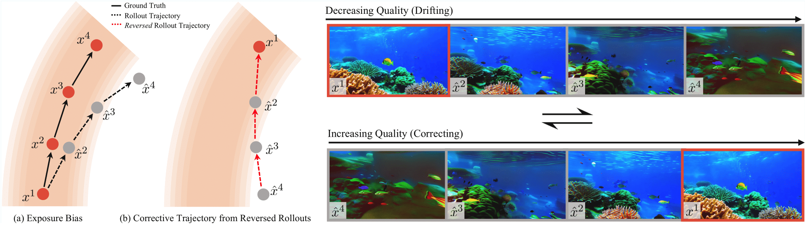
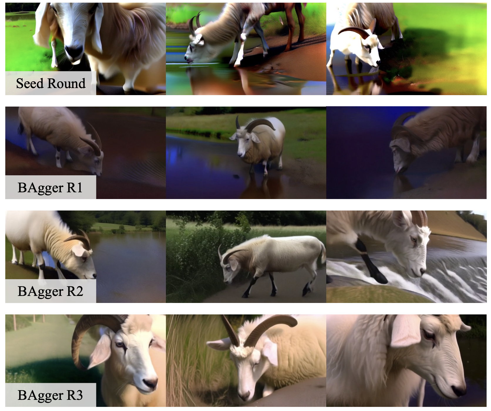

Autoregressive video models are promising for world modeling via next-frame prediction, but they suffer from exposure bias: a mismatch between training on clean contexts and inference on self-generated frames, causing errors to compound and quality to drift over time. We introduce Backwards Aggregation (BAgger), a self-supervised scheme that constructs corrective trajectories from the model's own rollouts, teaching it to recover from its mistakes. Unlike prior approaches that rely on few-step distillation and distribution-matching losses, which can hurt quality and diversity, BAgger trains with standard score or flow matching objectives, avoiding large teachers and long-chain backpropagation through time. We instantiate BAgger on causal diffusion transformers and evaluate on text-to-video, video extension, and multi-prompt generation, observing more stable long-horizon motion and better visual consistency with reduced drift.

In standard autoregressive video diffusion, exposure bias creates a mismatch between training on clean contexts and inferring on self-generated frames. Small errors accumulate, causing generations to drift away from the real data distribution. Our key idea is to reverse the model's own rollouts: given a potentially drifted clip, we treat its time-reversed version as a corrective trajectory that demonstrates how to recover from corrupted contexts. This turns the model's own mistakes into supervision, without requiring any external expert or teacher network.
BAgger improves long-horizon behavior across a range of settings, including ultra long video generation, video extension from existing clips, and multi-prompt generation with dynamic scene changes. Our method is able to generate stable text-to-video generations for lengths longer than 4 minutes. Input frames for video extension results are highlighted by a red border.
We compare BAgger against several autoregressive video diffusion baselines, visualizing long-horizon rollouts for each method side by side. Our method produces maintains high frame-wise quality and maintains diverse motions across long-horizon generations. Other AR diffusion methods suffer from rapidly decaying frame-wise quality, usually in the form of over saturation. Self Forcing begins with high frame-wise quality, as it is distilled from a 14B base model, but motion diversity and frame-wise quality both degrade as generation length goes on.
We ablate across multiple rounds of the BAgger algorithm to study its effect on long-horizon generation. A single round is insufficient to capture the full distribution of drifted states and can even degrade performance relative to training on seed data alone. Performance improves steadily over multiple rounds. The figure below visualizes examples from each round, sampling three 30-second generations per model and showing the final frame for each sample. The seed-only model exhibits severe over-saturation, while one round of BAgger over-corrects toward under-saturated outputs. By the second round, saturation and contrast stabilize, producing more natural color balance, and the third round yields further improvements in detail and temporal consistency.

@misc{po2025baggerbackwardsaggregationmitigating,
title={BAgger: Backwards Aggregation for Mitigating Drift in Autoregressive Video Diffusion Models},
author={Ryan Po and Eric Ryan Chan and Changan Chen and Gordon Wetzstein},
year={2025},
eprint={2512.12080},
archivePrefix={arXiv},
primaryClass={cs.CV},
url={https://arxiv.org/abs/2512.12080}
}